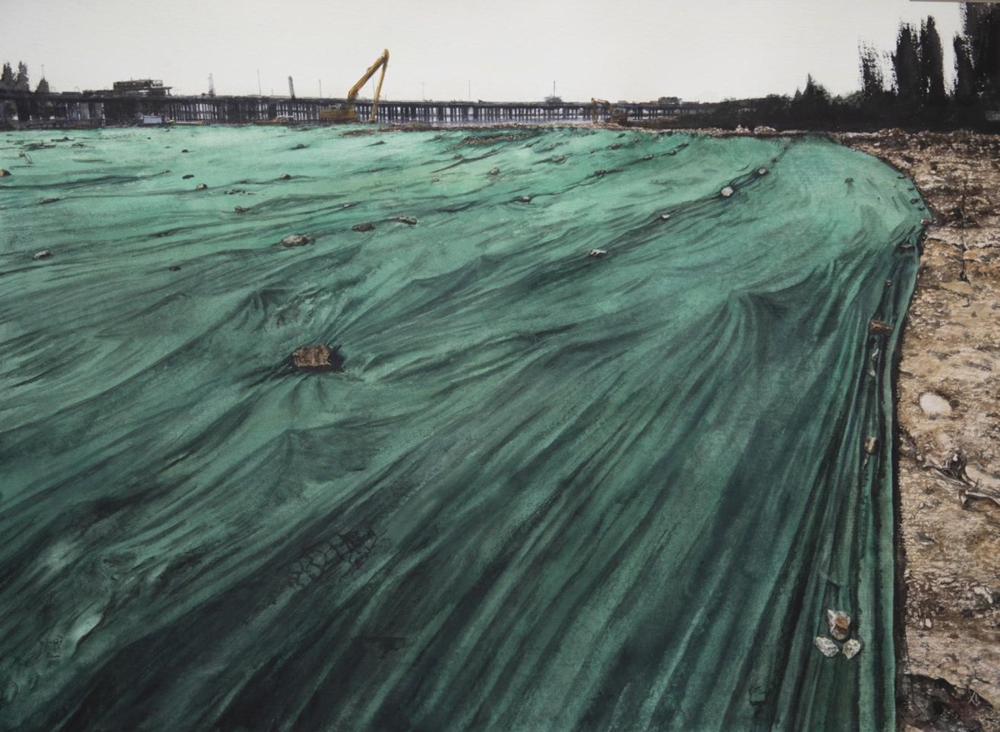

Qianhai Green Curtain
前海绿幕

- Artwork ID / 作品编号
- KW-W-000009
- Year / 年份
- 2022
- Medium / 媒介
- Watercolor on paper / 纸本水彩
- Dimensions / 尺寸
- 78.5 × 109 cm (H × W / 高 × 宽)
About the work / 作品介绍
Created during the development of Qianhai, Shenzhen, this work transforms the vast green construction mesh into a visual metaphor for life. The flowing surface echoes the rhythm of the land while bridges, machinery, and urban infrastructure establish a new spatial order. The painting explores the evolving relationship between land, human intervention, and the environment.
《前海绿幕》创作于深圳前海建设时期。作品以覆盖工地的大面积绿色防尘网作为主体，将临时性的工程材料转化为具有生命感的视觉意象。起伏流动的绿色覆盖地面，与远处桥梁、机械和城市建设共同构成空间关系，使建设现场呈现出近似自然地貌的节奏与韵律。作品关注城市建设过程中人与土地、工程与环境之间不断建立的新关系。绿色既象征生态修复，也成为生命力量的视觉隐喻，在现实景观与精神景观之间呈现出充满希望、秩序与生命感的当代城市图景。